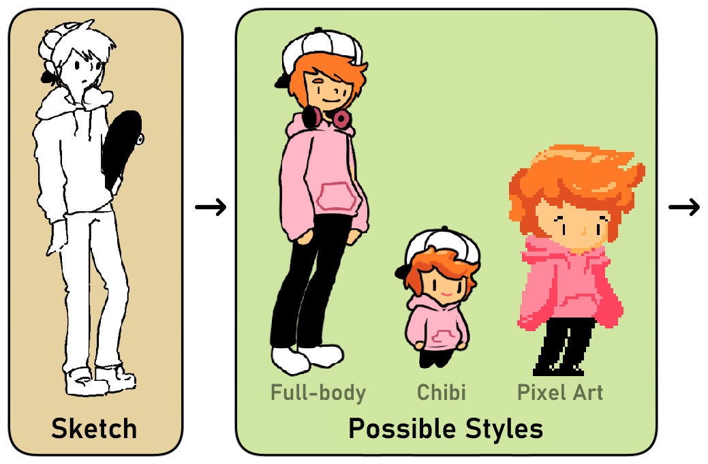
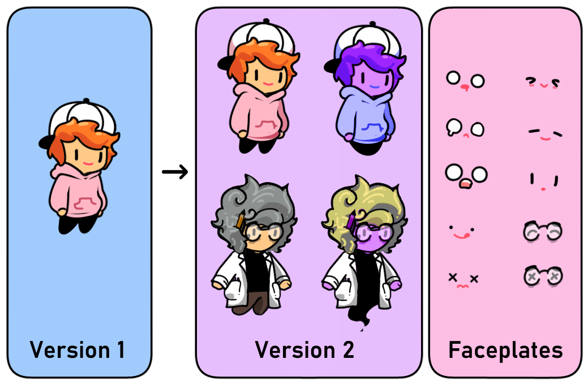

👻Inspectre
A 2D puzzle-platformer (password: uncle) made with Unity, in which a young lad must possess objects to traverse a trap-filled mansion and save his missing uncle. I was the Lead Artist/Animator, as well as the Project Manager of this project.
- Managed project, wrote documentation and tracked progress in spreadsheets, and ran standups to meet deadlines
- Designed and drew all characters, animations, environments, UI art
- Created modular sprite components that tiled together for easy level iteration (pipe system, bookshelves, wire cables, machine parts)
- The password to access the game on itch.io is "uncle"
Design
The design of Inspectre was motivated by our primary mechanic: object possession. We wanted to explore a number of novel possessions, and create levels that would require the player to swap between the player character and objects to trigger progression throughout the world. Ultimately, we implemented three main possessions:
- Basketball, used as a second means of locomotion throughout stages. The basketball is more mobile than the player character, jumping higher, moving faster, and fitting into tighter spaces. At the same time, the player character can jump on the ball, encouraging strategic placement of the ball when transferring controls.
- Power Outlets, used to power other objects in the area. One level revolves around flying platforms that can only be operated through possession-directed electricity; the player must switch between placing the player character on platforms, and possessing power outlets to direct the flow of electricity.
- Bookshelves, used to physically restructure a level. One level takes place in a library, and requires the player to move bookshelves around so that the library can be traversed in order to solve a puzzle.
Art
As the sole artist on this game, I needed to create a lot of assets. To help me organize that process, I decided upon a few guiding principles.
- Modularity, to manage the sheer volume of assets needed for such a dense environment. Any time we needed new assets, I looked to make them modular so we could reuse parts, and designed with Unity's Tilemapper in mind. This applied to machine parts, pipes, wires, bookshelves, and structural elements.
- Legibility, to ensure players understand what they are seeing and how it relates to them. Levels have both a foreground and a background; the background cannot be interacted with, while the foreground can. To separate the two, I used slightly different styles, and outlined foreground objects to make them stand out.
- Simplicity, to reduce the time needed to make assets. While designing the player character, Pierre, I weighed three styles against each other: a lined full-sized style, a lined chibi style, and a pixel art style. Ultimately, I chose the chibi style; it was simple to work with, easy to use, and played well with Unity's animation system.


Accredation
This game was created by Team Momo for CMS.617, Advanced Game Studio.
Thank you to R. Neogy, Z. Collins, A. Sipser, and D. Filizzola for being a joy to work with! ❤️